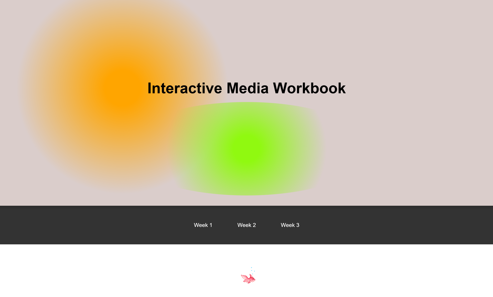
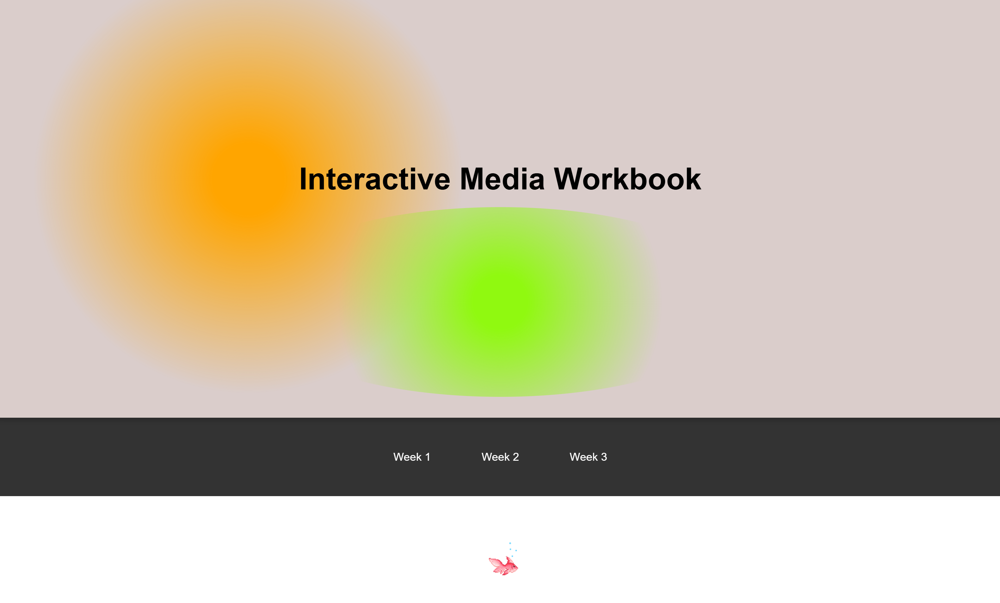
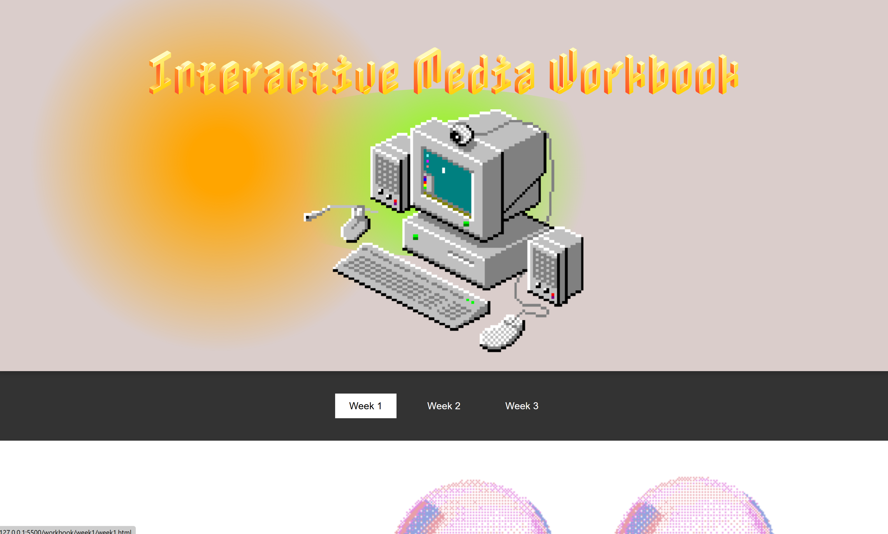
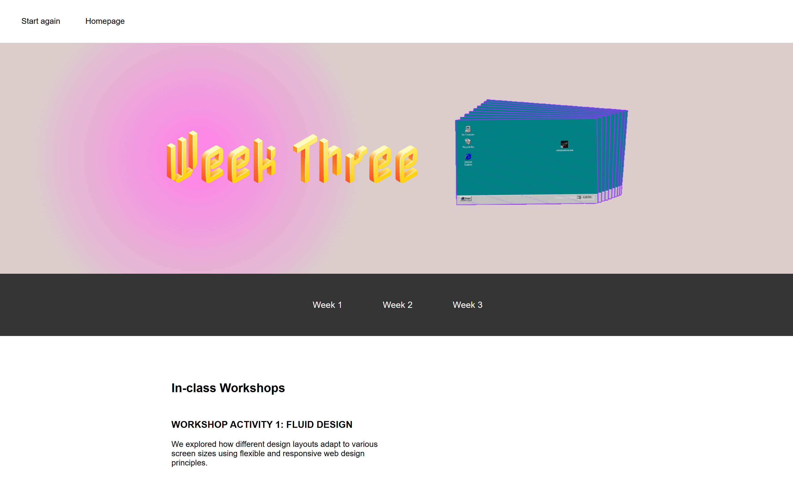
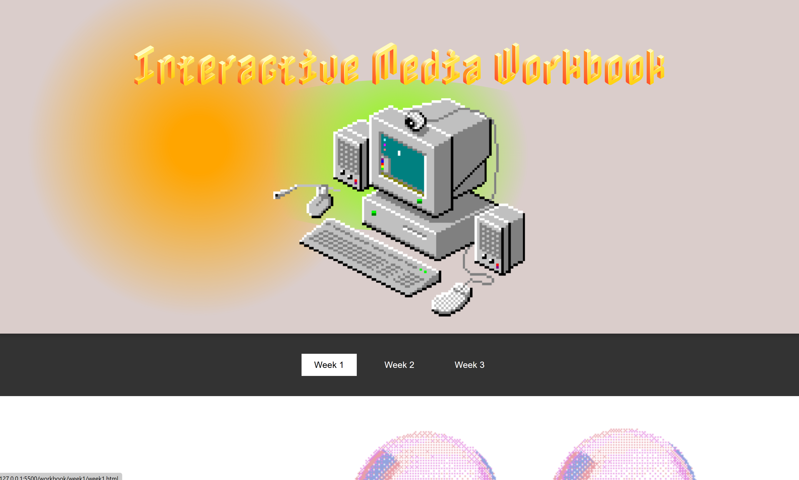
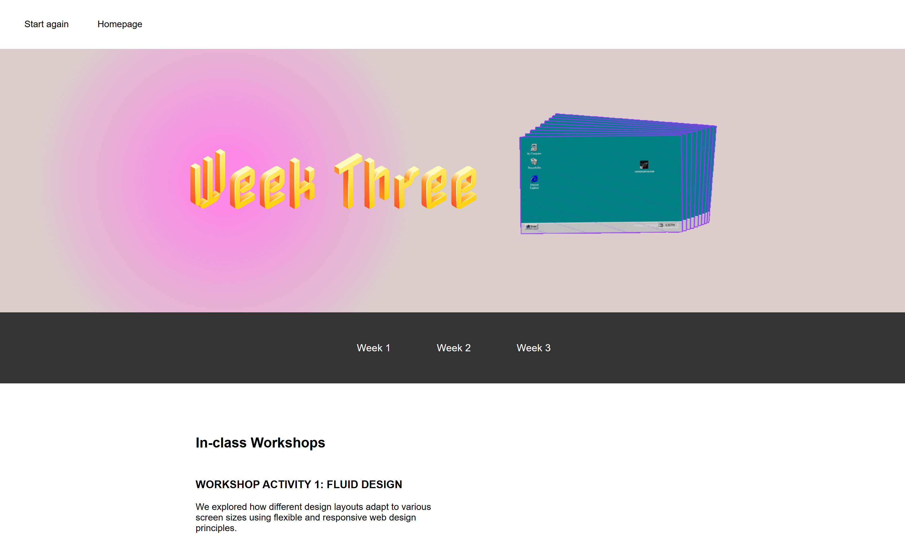

In-class Workshops
WORKSHOP ACTIVITY 1: FLUID DESIGN
I tried to design a website that emulated my box design from the previous activity. I also liked the idea of having simple shapes as a running theme over each page.

Homework
LOOK! Assess the TEMU website
When you first open TEMU you are taken to their homepage which features a search bar at the top alongside a navigation bar. The categories section features a drop-down list of different products
categorised into things like clothing and home & kitchen. When clicking on one of these
categories, you are then taken to multiple circular images of different subcategories, and as you hover your mouse over the images, a drop shadow appears behind them.
When you click on a subcategory you are then taken to a page full of products, again as you hover your mouse over each image a drop shadow appears behind it. In addition, a translucent rectangular
label appears over the image that contains more detail of the product. When you click on a product image, you are then taken to a completely new page which opens in a separate tab. Here, you are given more details
about the product. When you hover your curser over different information, like sizes, additional information pops up in a speech bubble.
TEMU Website

Individual Research
Website Inspiration
NGV YayYoi Kusama Website
My main source of inspiration was the Yayoi NGV Website. I took inspiration from the Nav bar, footer and the downwards scrolling and I liked the smooth style change between each section. I also liked the central layout of the main body and large title page.
MoMa Website
I took inspiration from the layout of the moving main image, with the text positioned underneath it, leading the viewer downwards. I also liked the white and black style, with consistent simple typeface.
Other websites I looked at:
FeralfileArts and Culture
Arabica coffee
Candybox
Bluebottle coffee
My Coding Process
Day 1
I started by playing around with shapes, colours, grids, containers and buttons. I learnt how to link images and shapes to different pages. I found it took a few tries to get the correct dimensions for the grid and shapes to all fit in the box neatly.

Day 2 and 3
I then tried to create a homepage in a similar 'gaming/box' style. To get to each week you can click on the shape above it. I added a back button in the top left corner inspired by the back button of the CDG website.
Day 4
I then created a page for each week, consisting of a nav bar, weeks bar, header and area for content. I started playing more with colour changes and the hover effect. I found it very challenging to create a page with good spacing, as my overall layout lacked coherence and looked very 'ugly'. I found it especially challenging when making a flexbox for my main content and how to display the images and text next to each other so it was easy to read. I spent hours making many variations of this layout.
Day 5
After achieveing basic understanding of html and css I now decided to work harder on the layout and style of my webpage and add more interactive details. I changed my whole colour scheme so colours were more muted and less harsh on the eye. I completely changed my homepage so that it was more consistent with the weeks pages.
Day 6
I now started refining details including changing custom cursors when hovering over certain buttons, adding a moving gradient heading for homepage, and making the main body layout easier to read by adjusting the flexbox. To get elements in a better position, I just kept adjusting margins and padding on everything.


Day 7
One of my favourite features included the radial circle button with colour change, which was fun to code and play around with.
I also experimented with the homepage a lot, especially the
green and orange circles and how they interacted with each other. I liked having them
change depending on what size the screen was.

 

Day 8
Upon reflection, I decided to change the font for the headings,
and added more gifs to make the homepage more interactive. I also removed the gradient
hover background as this clashed with the gifs imagery.
I decided to have more of an old school computer theme, instead of the box idea
which I found hard to bring to life. So my idea more evolves around a 'pixel'/'old windows'/'game'
aesthetic. The landing page felt more like logging into a computer, but also
reminded me of when you asked to verify that you are not a robot.
 


